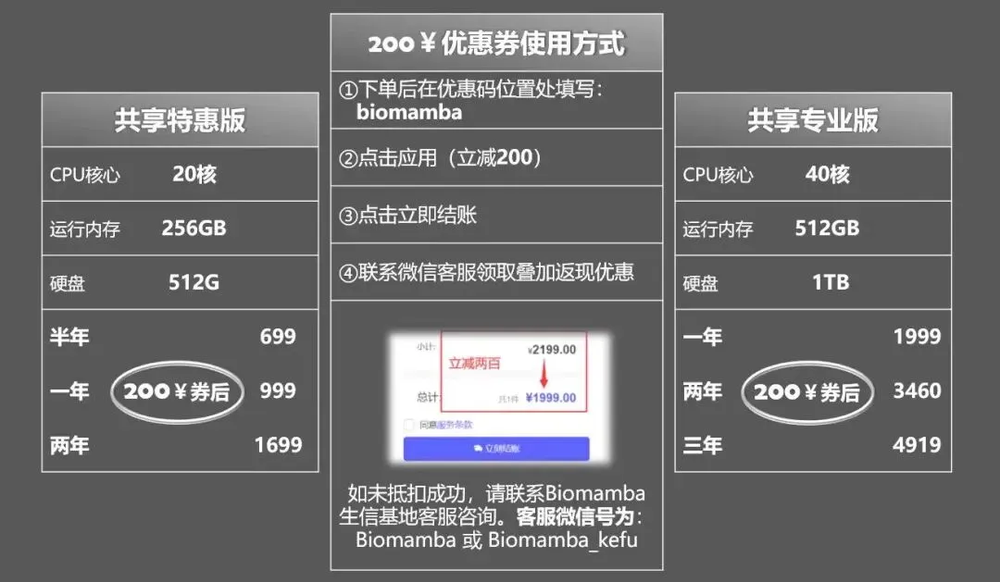
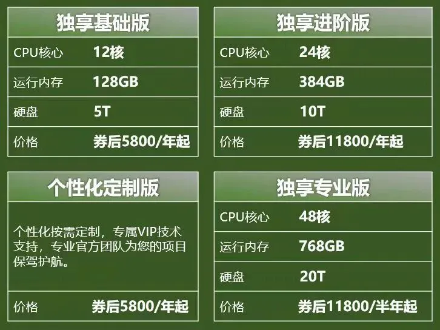

也就是个电费钱吧
原文：https://mp.weixin.qq.com/s?__biz=MzAwMzIzOTk5OQ==&mid=2247520860&idx=1&sn=a7d9981d7e35acd30e6ef3ae19f9a86d&chksm=9b3ceb0cac4b621a818a1fd472282175908b092a512ca675328fe5319b33a28cfdf35bc95920#rd 合集：服务器

写在前面
接上图，看见群里有人表示服务器租用有点贵，立马有人站出来鸣不平，表示699~1999的价格完全就是电费钱 。我们简单算一下，按照家用电脑算300w 功耗(已经很低了，我的电脑850w)、一天开12个小时(服务器是全年不关闭的)，一年工作300天 、电费0.5￥ /度(实际商电还会更高)来计算，光电费就是0.312300*0.5=540￥ 啦。参考下文的价格，再加上硬件成本(按照配置某宝某东随意搜)，服务器就差用爱发电 啦，就别吐槽价格了~更别提我们还有额外返现以及粉丝福利：共享(经济实惠)：有root权限的共享服务器,报我名字立减200￥独享(省电省心)：生信分析不求人
访问链接：https://biomamba.xiyoucloud.net/
更多内容可咨询客服微信[Biomamba_yunying]
考虑到大家自己的电脑通常配置有限，有以下几点原因更推荐大家使用服务器来完成生信分析：
一、升级配置
这一点可以说是刚需，公众号内的粉丝大都是研究单细胞测序的，现在动辄就百万细胞的数据集，拿自己的8G内存笔记本显然配置够不上需求。以下为各档位服务器的配置，起步256GB 、20线程 的配置足够为你的大数据集保驾护航：

****● ****真的≈独享，机器中当前账号中没有计算任务时配置全空，无需与他人共享计算资源：

****● 当然我们也提供真正的独享 服务器：

**● **当然，记得合理分配计算资源，并不是调用的资源越多计算速度就越快：调用的线程越多就算的越快嘛?
二、技术支持
做生信分析难免会遇到环境配置和软件安装的问题，自己一个个去搜软件安装办法和依赖环境效率过低，而作为专业的生信服务器，西柚云的生信技术人员已经在服务器中预装了上千款生信软件/R包:


三、不用关机
这点我想大家深有体会，很多软件或函数任务运行时可能会花费数天时间，在本地电脑运行期间若自己的电脑若遇到断电、断网等问题，运行中的任务则会付之一炬。而服务器在机房稳定运行、永不关机，在服务器中执行任务时，无论是挂载在Linux 还是用Rstudio-server 运行，即使本地的电脑掉线或关机，服务器依然可以继续执行任务，完全不用守着自己的电脑。大家把自己的任务提交到后台运行即可：程序可以自己跑的，不用盯着
四、网速快
相较于大家的塑料校园网，服务器每台接入1000M的专线，且我们具有正规备案，即使访问境外的数据库依旧可以达到相同的速度，即使是使用最简单的wget 命令也能达到极高的下载速度，即使是用作一个网盘，似乎也比百度云更有优势。

五、性价比高
如上，一年服务器的费用差不多与一年的百度云会员、一个16GB内存条、1T的固态硬盘价格相当，但功能却多了许多 。与其花重金 升级自己的电脑，倒不如低价租用一台服务器，现在通过联名页面注册即送200￥优惠券 ，填写优惠码[biomamba]立减：“200元”粉丝福利使用方式。


另外，可咨询文末微信号领取返现福利(200￥粉丝专属优惠券与返现可叠加：“200元”粉丝福利使用方式)，注册链接：
https://biomamba.xiyoucloud.net/
六、损耗低
电脑的工作是有损耗的，相信大家在用自己的电脑计算时已经感受到机器的风扇在嗡嗡作响 ，倘若电脑不堪重负出现故障，随便换哪个零件 想来也比服务器的租金要高。
七、数据存储有保障
相较于传统的硬盘直储，服务器的存储方式为超融合集群存储 ，具体优点为高可靠性、高性能高可用，并且具有在线更换硬件、恢复数据的优势。这些优点我们之前专门花推送去说过(大家的宝贝数据怎么存储才最安全)。
八、正经Linux系统
无论是windows下的子系统、双系统，还是虚拟机，与真正的Linux 环境还是有所区别。而服务器原汁原味的Linux可以帮助大家在真正的Linux环境中学习生信。没有Linux基础的小伙伴也不用担心，我们已经为大家准备好了系列教程：
详细试用教程可联系客服微信Biomamba_kefu

如何联系我们

 公众号后台消息回复不便，这里给大家留一下领取资料及免费服务器(足够支持你完成硕博生涯的生信环境)的微信号 ，方便各位随时交流、提建议（别问在么，添加时直接说来意）。此外呼声一直很高的交流群 也建好了，欢迎大家入群讨论：
公众号后台消息回复不便，这里给大家留一下领取资料及免费服务器(足够支持你完成硕博生涯的生信环境)的微信号 ，方便各位随时交流、提建议（别问在么，添加时直接说来意）。此外呼声一直很高的交流群 也建好了，欢迎大家入群讨论：
大家可以阅读完这几篇之后添加给生信入门初学者的小贴士 如何搜索公众号过往发布内容

 您点的每个赞和在看，我都认真当成了喜欢
您点的每个赞和在看，我都认真当成了喜欢